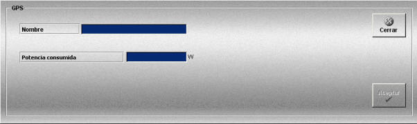

GPS
La creación y edición de modelos de GPS se realiza mediante la siguiente ventana.

Esta ventana permite definir los equipos GPS que podrán ser añadidos a las unidades participantes en los Ejercicios.
Para cada GPS se definen los siguientes datos:
Nombre: Nombre del GPS.
Formato: caracteres alfanuméricos.
Potencia consumida: Potencia consumida.
Unidades: vatios
Rango: 0.0 - 1000.0